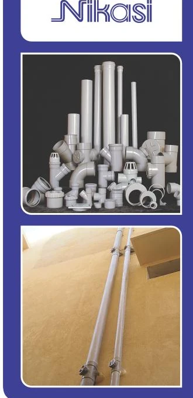

Approved documentation
Specifications and technical requirements should be verified against the latest approved Dadex documentation.
UPVC SWV System
UPVC · SWV System

UPVC · SWV System
Technical information is presented openly. Essential information is not hidden behind an accordion.
| Material | Unplasticised Polyvinyl Chloride (UPVC) |
|---|---|
| Appearance | Light gray colour. |
| Standards & Specifications | Nikasi pipes conform to ISO 3633 & EN 1329. Imported fittings with solvent cement socket jointing and with rubber ring socket joint, both conform to ISO 3633 & EN 1329. |
| Available Range | 40, 50, 75, 110, 160 and 200mm in lengths of 3 & 4m. |
| Jointing Method | Solvent cement jointing and rubber ring push fit jointing. |
Specifications and technical requirements should be verified against the latest approved Dadex documentation.
Dadex Techno Commercial Department and Sales Offices can assist with product selection and technical information.
Confirm system suitability, installation requirements and limitations for the intended application before specification.
Approved product literature, technical documents and drawings can be connected here as the resource library is finalized.
Contact Dadex for product information and technical assistance.